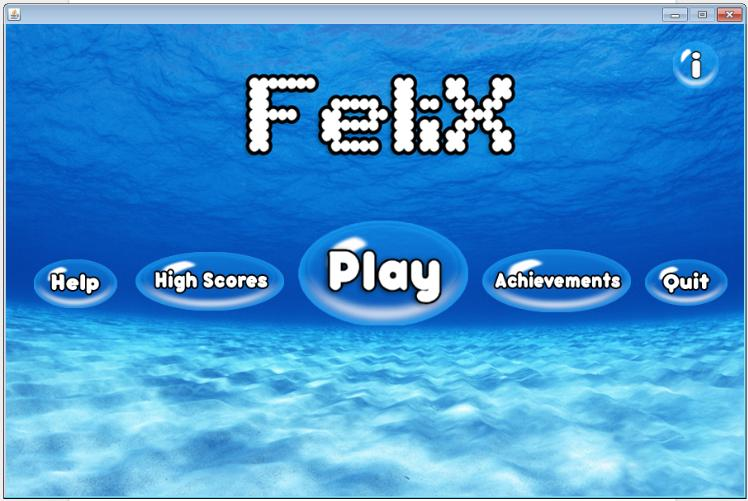
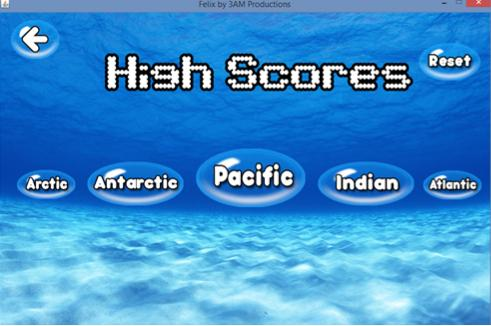
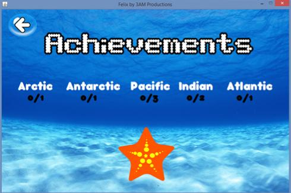

Menus
Inside of the main screen you will find several menus, each of which will provide you with information such as high scores or who were the glorious people behind the creation of Felix.

Main menu of Felix
Help Menu
If you've managed to make it here, I think you know where this sub-menu takes you. It is here that you can learn more about the various aspects of the game, such as the menus or gameplay.
High Scores
It is in this sub-menu that you can see who the cream of crop are when it comes to playing Felix. Inside of here you will be able to see high scores based on the fastest completion time for each ocean stage.
You will also be able to reset all the high scores with the 'Reset' button, in case your friend marked a time you simply cannot surpass!

You also have the option to print the high scores for a certain level, if you wanted to hang it up on your fridge for all the world to know how good you are at Felix.
Achievements
In this sub-menu you will be able to check out the achievements you have completed. Finish all of them and you'll be in for a treat (the satisfaction of knowing you collected all the achievements is all you need, right?)!

About
If you were too lazy to come all the way to the help menu to learn about the creators of Felix the about sub-menu is your best friend. There you will find information on both Hernando and Ansh, without having to click through tons of sub-categories here!
Quit
Ah, the time has finally come for you to go outside and face the real world. After clicking here all the euphoria and excitement from playing Felix will cease.